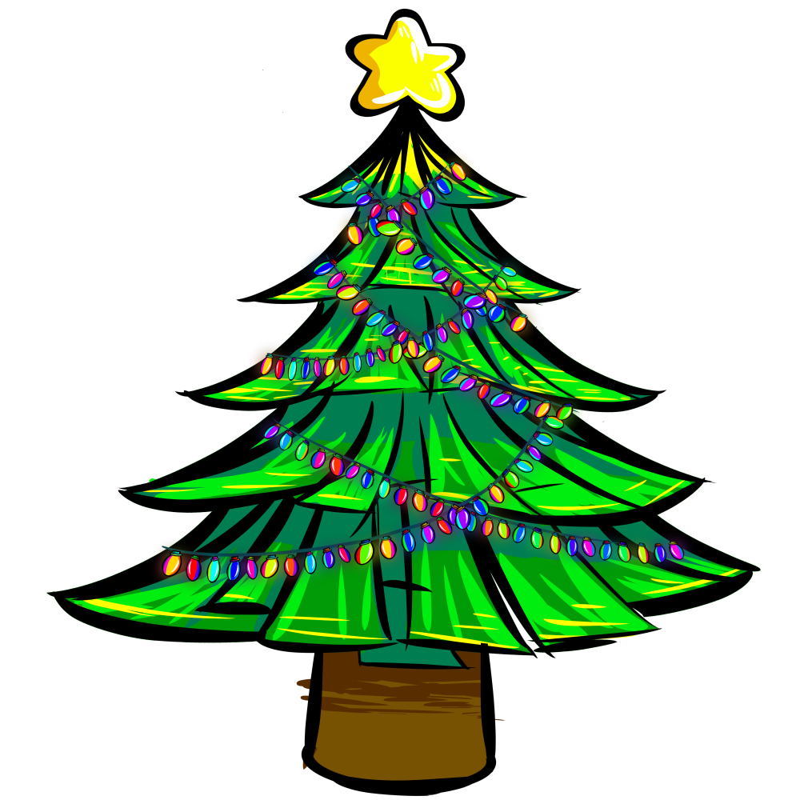

Tomando Decisiones
Hace algunos meses empece a notar que el mundo poco a poco me habia estado
quitando mi libertad, mi libertad de elegir, de decidir, de pensar diferente a los demas.
La inteligencia artificial, las redes sociales, la publicidad, todo estaba diseñado para moldear
mi forma de pensar y actuar, y con eso empezaron a matar la creatividad que hay en mi. Y en la
lucha por recuperar mi Libertad tanto creativa como de mi forma de pensar, hoy cree este blog.
-Lunes 1 de Dicenmbre de 2025-